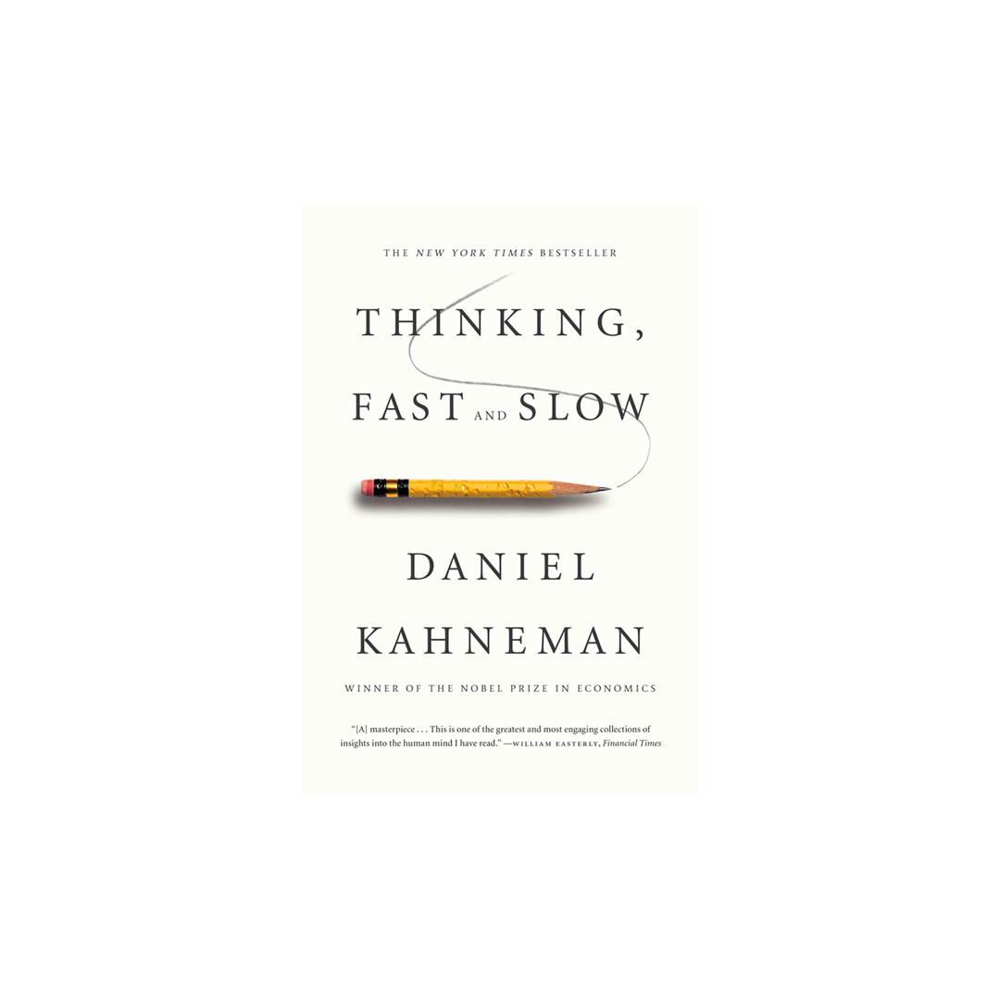

Library › Psychology & People
Thinking, Fast and Slow — Summary & Key Lessons

The Nobel laureate's map of the mind's two systems — and the predictable errors that hijack your every judgment.
📖 OPEN THE FULL INTERACTIVE BREAKDOWN →🌐 Read it in Hindi, Hinglish, Gujarati, Tamil & 22 more languages — free, with audio.
💡 The Big Idea
Kahneman — the psychologist who won the economics Nobel — condenses five decades of research (much with Amos Tversky) into two characters: System 1 (fast, automatic, associative, effortless — and the origin of most beliefs) and System 2 (slow, deliberate, logical — and fundamentally lazy). System 1 is brilliant at its job and systematically wrong in predictable ways: it substitutes easy questions for hard ones, believes coherent stories over complete data (WYSIATI: What You See Is All There Is), anchors on arbitrary numbers, fears losses twice as much as it values gains, and remembers experiences by their peaks and endings rather than their totality. You can't turn System 1 off — but you can learn to recognize the minefields and slow down.
🧠 The 6 Key Lessons
Lesson 1: Two Systems: The Hero and the Lazy Controller
Part I: Two Systems
System 1 operates automatically: it reads emotions on faces, completes '2+2=_', drives on empty roads, and generates the impressions and feelings that become your beliefs. System 2 allocates attention to effortful operations: 17×24, tax forms, logic puzzles, self-control. The catch: System 2 is lazy — it usually endorses System 1's suggestions with minimal checking, and it's depletable (ego depletion: self-control and hard thinking drain the same budget; hungry judges deny parole). Intelligence doesn't immunize: smart people fail the bat-and-ball problem ('a bat and ball cost $1.10; the bat costs $1 more than the ball...') because the intuitive answer (10 cents) arrives with total confidence and System 2 waves it through. Rationality is less about brainpower than about the habit of checking.
📖 Example: The bat-and-ball: more than half of Harvard, MIT, and Princeton students answer 10 cents (correct: 5 cents). The error isn't ignorance — it's that System 1's fluent answer FEELS true, and the feeling of truth is exactly what System 2 uses to decide whether… Read the full example →
⚡ Do this: Build one circuit-breaker: for decisions above a personal threshold (money, hiring, health), institute a mandatory pause + one written check: 'What would make this intuitive answer wrong?'
Lesson 2: WYSIATI: The Story Beats the Data
Part I–II: Jumping to Conclusions
System 1 builds the most coherent story possible from available information — and never asks what's missing. What You See Is All There Is: confidence tracks the COHERENCE of the story, not the quantity or quality of evidence, which is why people make sweeping judgments from thin slices (halo effect: one known trait colors all unknown ones), why the order of information matters, and why 'known unknowns' barely register. Corollary machinery: priming (exposure to words like 'Florida' and 'gray' makes students walk slower), cognitive ease (repeated statements feel truer; rhyming aphorisms feel wiser; clear fonts are more believed), and the affect heuristic (liking something lowers your perception of its risks). The mind is a machine for jumping to conclusions — and the jumps feel like insight.
📖 Example: The halo in hiring: interviewers meet a confident, articulate candidate and unconsciously upgrade every unmeasured trait — diligence, honesty, skill — from a 20-minute impression. Kahneman's fix at the Israeli army (his first real job) became a classic:… Read the full example →
⚡ Do this: For your next important evaluation (candidate, investment, apartment), score 4–6 pre-defined dimensions SEPARATELY before allowing any overall feeling. Ask explicitly: 'What evidence am I missing?' — the question WYSIATI never asks.
Lesson 3: Anchors and Availability
Part II: Heuristics and Biases
Anchoring: any number in the environment — even a spun roulette wheel — pulls subsequent estimates toward it, through both deliberate adjustment (insufficient by nature) and automatic priming. It's among the most robust effects in psychology and works on experts: real-estate agents' valuations moved ~40% as much as amateurs' when list prices were manipulated, while denying any influence. Availability: we judge frequency and risk by how easily examples come to mind — so vivid, recent, personal, and media-amplified events (plane crashes, shark attacks) are overweighted while quiet killers (diabetes, falls) are dismissed; availability cascades let one incident inflate into public panic and policy. Both heuristics share the signature flaw: the inputs are irrelevant to the question, and the outputs feel like judgment.
📖 Example: The wheel-of-fortune study: a wheel rigged to land on 10 or 65 preceded the question 'what percentage of African nations are in the UN?' — median answers: 25% after seeing 10, 45% after 65. A transparently random number moved factual estimates twenty points.… Read the full example →
⚡ Do this: In negotiations: never let the other side anchor first on important deals — and when they do, explicitly re-anchor with your own number rather than adjusting theirs. For risk decisions: look up the base rate before consulting your feelings.
Lesson 4: Regression, Base Rates & the Outside View
Part II–III: Regression to the Mean / Intuitive Predictions
Extreme performances are part skill, part luck — so they're followed by less extreme ones purely statistically: regression to the mean. Minds hate this: we invent causal stories instead ('the praise made him complacent,' 'the criticism worked'), which is why punishment seems to work and reward seems to fail — a cruel illusion baked into feedback itself. Related: base-rate neglect — given a personality sketch, people predict 'librarian' while ignoring that farmers outnumber librarians 20:1. The master remedy is the outside view: before trusting your inside story ('OUR project is special'), find the reference class and its statistics — and let the planning fallacy warning ring: projects everywhere run late and over budget because teams plan from the best-case inside story.
📖 Example: Kahneman teaching Israeli flight instructors: one insisted praise ruins cadets — every time he praised a clean maneuver, the next was worse; every time he screamed after a botch, the next improved. Pure regression: an exceptional maneuver is followed by a… Read the full example →
⚡ Do this: Before your next forecast, force the outside view: name the reference class, find its base rate (how long do THESE projects take? what fraction succeed?), and adjust from THAT anchor — not from your special story.
Lesson 5: Loss Aversion & Prospect Theory
Part IV: Choices
The work behind the Nobel: people don't evaluate outcomes as final wealth states (as classical economics assumed) but as GAINS and LOSSES from a reference point — and losses loom roughly twice as large as equivalent gains. Consequences everywhere: the endowment effect (owners demand ~2x what buyers will pay for the same mug — merely owning shifts the reference point); the status-quo bias (change means possible losses, weighted double); the fourfold pattern (risk-averse for likely gains, risk-SEEKING for likely losses — why the desperate double down and losing wars continue); and framing (90% survival attracts, 10% mortality repels — identical facts, different reference points, different surgeries chosen). The disposition effect in investing — selling winners, clinging to losers — is loss aversion with a brokerage account.
📖 Example: The mug experiments: students given a mug minutes earlier demanded ~$7 to sell it; students without one would pay ~$3 for it. Nothing about the mug changed — ownership did. Scaled up: golf pros putt measurably better for par (avoiding a loss) than for birdie… Read the full example →
⚡ Do this: Reframe deliberately: for any decision you're avoiding, write the loss-frame ('what I lose by staying') next to the gain-frame. And adopt the broad frame for investments: evaluate the portfolio quarterly, not each position daily — narrow framing plus loss aversion is how rational people bleed money.
Lesson 6: The Two Selves: Experience vs. Memory
Part V: Two Selves
You are two selves with different interests: the experiencing self (living each moment) and the remembering self (keeping score and making decisions). Memory follows the peak-end rule — an episode is scored by its most intense moment and its ending, with DURATION almost completely neglected. The remembering self is a tyrant: it chooses future experiences based on distorted summaries, sacrificing hours of actual experience for a better story (the cold-hand experiment: people choose to REPEAT a longer painful trial because it ended slightly better). Life application: the focusing illusion — 'nothing is as important as you think it is while you're thinking about it' — inflates whatever's in view (income, climate, a purchase) far beyond its real effect on experienced wellbeing.
📖 Example: The colonoscopy study (pre-sedation era): Patient A, 8 minutes ending at peak pain; Patient B, 24 minutes — same peaks — but ending in mild discomfort. B endured strictly more total pain yet remembered the procedure as LESS bad and was more willing to… Read the full example →
⚡ Do this: Engineer endings: close workdays, trips, and difficult conversations deliberately well — the ending disproportionately becomes the memory. And test big desires against the focusing illusion: 'How much will this actually occupy my Tuesdays a year from now?'
✅ 5-Step Action Plan
- Install a System-2 circuit breaker for all high-stakes decisions.
- Evaluate by separate dimensions before allowing global impressions.
- Re-anchor negotiations; consult base rates before feelings.
- Take the outside view: reference class first, special story second.
- Frame broadly, check loss-frames, and end things well on purpose.
💬 Best Quotes from Thinking, Fast and Slow
- “Nothing in life is as important as you think it is, while you are thinking about it.”
- “A reliable way to make people believe in falsehoods is frequent repetition, because familiarity is not easily distinguished from truth.”
- “We can be blind to the obvious, and we are also blind to our blindness.”
Interactive version: mark lessons as read, listen in your language, share quote cards.